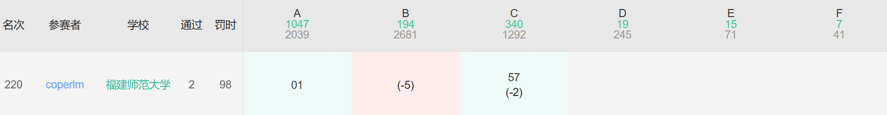

窝补药橙味算法竞赛掉大分糕守
2025年2月21日周五晚这场牛客，掉大分了
A题快速切出来，后面就开始坐牢了（还好记得开ll了）
B题憋了半天，感觉要开不止一对堆，然后一看榜C出的人多，就去看C了
然后C挂了两发，和21年csp-s差点ce的原因一样（
当时是数组开到N，但是i也遍历到N
这次学聪明了，数据开到N+10，然后扫到N；结果忘了后面用到i+1了
然后挂了两发才发现
B题就有意思了，开了四个堆最终，调了好半天过样例了，结果一直WA
赛后找评论区的hack数据也找不出一点问题
最终对拍了下下，记录最大值的初始值是0，但是最大值有可能是负数···
最终成绩

虽然没掉大分，不过这场也打得挺抽象的
本博客所有文章除特别声明外，均采用 CC BY-NC-SA 4.0 许可协议。转载请注明来源 coperlm's Blog！
相关推荐
.gif)
2025-01-19
CF补题小合集
由于后续CF比赛基本只参加VP，故特此记录一下 2025.01.17Codeforces Round 996 (Div. 2) 这把打爽了，表现分差点上紫，D题最后一分钟调出来过样例...
.gif)
2024-08-05
Codeforces Round 963 (Div. 2)题解
题目链接 本场比赛应该算是今年我打的第一场算法竞赛，也是NOIP2021结束之后难得发挥出来的比赛。ABC都是比较简单的题，D是二分+dp，比较难想 E最终还是不会，疑似是一个高级dp A.Question Marks 观察样例就能打出来 12345678910111213141516171819202122232425#include<iostream>#include<string>using namespace std;signed main(){ int t;cin >> t; while( t -- ){ string s;int n;cin >> n;cin >> s; int a , b , c , d , e;a = b = c = d = e = 0; for(int i = 0;i < s.length();i ++){ if( s[i] == 'A' ) a ++;...
.gif)
2024-08-07
Codeforces Round 964 (Div.4)题解
题目链接 差一道题就ak了，打代码的速度还是慢了点 F时间不够了，于是随便糊了个时间复杂度不对的算法，结果算法对了，少了个预处理然后就TLE了，赛时没有发现 A.A+B Again? 1234567891011#include<iostream>using namespace std;int t , n;signed main(){ cin >> t; while( t -- ){ cin >> n; cout << (n/10)+(n%10) << endl; } return 0;} B.Card Game 直接穷举所有可能性即可 思路不是很难，就看如何实现了 123456789101112131415161718192021222324252627282930#include<iostream>#define int long longusing namespace std;int t ,...
.gif)
2024-08-11
Codeforces Round 965 (Div. 2) 题解
题目链接 逆天抽象局，ab都是构造题， A. Find K Distinct Points with Fixed Center 12345678910111213141516171819202122232425#include<iostream>#define int long longusing namespace std;int t , x , y , k;signed main(){ cin >> t; while( t -- ){ cin >> x >> y >> k; if( k % 2 ){ cout << x << " " << y << endl; for(int i = 1;i <= (k-1)/2;i ++){ cout << x-i <<...
.gif)
2024-12-02
FJNU2024低程赛题解
比赛链接 题目按总过题数量降序排列 A.123456789#include<iostream>using namespace std;signed main(){ int a , b;cin >> a >> b; int c = a - b;if( c < 0 ) c = -c; cout << c << endl; return 0;} H.12345678910#include<iostream>using namespace std;signed main(){ int a , b , c;cin >> a >> b >> c; if( a == b && b == c ) cout << 1 << endl; else if( a == b || b == c || a == c ) cout << 2 << endl; ...
.gif)
2024-11-11
LIS学习笔记
前情提要：蓝桥杯校赛压轴题，是道朴素最长上升子序列板子题；没做出来，故学习记录一下 题目链接设原数列为 1,2,4,1,3,4，$f(x)$ 表示以第 $i$ 个数为结尾的最长上升子序列的长度 n 1 2 3 4 5 6 $a_i$ 1 2 4 1 3 4 $f(n)$ 1 2 3 1 3 4 代码实现 读入数据 大循环开始，从 $1$ 到 $n$，计算 $f_i$，记得初始值是 $1$ 小循环，从 $1$ 到 $i−1$，如果 $a_j$ 小于 $a_i$ 的话，说明这个数可以和 $f_i$ 组成上升子序列，则 $f_i$ 取 $max(f_i,f_j+1)$ 寻找最大值 具体代码1234567891011121314151617181920#include<iostream>using namespace std;const int N = 5e3;int a[N+10];int f[N+10];signed main(){ int n;cin >> n; for(int i = 1;i...
评论
DisqusWaline
.gif)
.gif)
.gif)
.gif)
.gif)